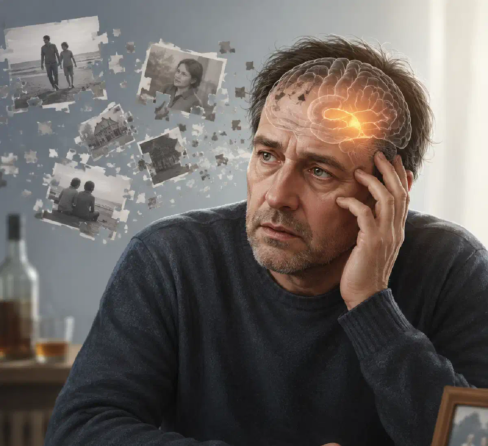

+38(068)
79 72 782
+38(068)
79 72 782Корсаковский синдром
Причины, симптомы и лечение


Бесплатная консультация, работаем круглосуточно 24/7
Причины, симптомы и лечение

Дата написания: 11 июн. 2026 г.
Последнее обновление: 11 июн. 2026 г.
Корсаковский синдром — это тяжёлое нарушение работы головного мозга, при котором человек утрачивает способность полноценно запоминать новую информацию, путает последовательность событий и может заполнять пробелы в памяти вымышленными воспоминаниями. Заболевание также называют корсаковским психозом, амнестическим синдромом Корсакова или хронической формой синдрома Вернике — Корсакова.
Одной из наиболее распространённых причин заболевания считается длительное употребление алкоголя в сочетании с выраженным дефицитом витамина B1 — тиамина. При этом синдром Корсакова может возникать не только у людей с алкогольной зависимостью. Иногда он развивается при тяжёлом истощении, нарушении всасывания питательных веществ, заболеваниях пищеварительной системы и других состояниях, сопровождающихся продолжительным недостатком тиамина.
Корсаковский синдром нельзя считать обычной забывчивостью или кратковременным провалом в памяти после употребления спиртного. Это серьёзное неврологическое расстройство, способное привести к стойким когнитивным нарушениям и потере самостоятельности. Чем раньше начато лечение, тем выше вероятность сохранить функции мозга и предотвратить дальнейшее ухудшение памяти.
Алкогольная амнезия представляет собой временную неспособность вспомнить события, происходившие во время выраженного опьянения. Человек мог разговаривать, передвигаться, совершать различные действия и внешне выглядеть относительно активным, однако после протрезвления отдельные эпизоды или весь период употребления выпадают из памяти. Причина такого состояния заключается не в стирании уже сформированных воспоминаний, а в нарушении их записи и закрепления во время опьянения. После прекращения действия алкоголя способность запоминать новую информацию обычно восстанавливается, хотя события, которые не были зафиксированы мозгом, могут так и остаться недоступными.
Синдром Корсакова имеет более стойкий характер. Человек испытывает проблемы с запоминанием информации даже в трезвом состоянии. Он может несколько раз задавать один и тот же вопрос, не помнить недавний разговор, забывать о приёме пищи или не узнавать место, в котором оказался совсем недавно. Таким образом, алкогольная амнезия чаще является отдельным эпизодом, связанным с интоксикацией, тогда как корсаковский синдром — это хроническое поражение мозга. Регулярные провалы в памяти после алкоголя нельзя игнорировать, поскольку они могут указывать на опасную модель употребления и повышенный риск дальнейших неврологических нарушений.
Основным механизмом развития синдрома Корсакова считается продолжительный дефицит тиамина. Витамин B1 участвует в энергетическом обмене нервных клеток и необходим для нормального функционирования структур головного мозга, отвечающих за обучение, ориентацию и формирование воспоминаний. При длительном употреблении алкоголя дефицит тиамина может формироваться сразу по нескольким причинам. Человек нерегулярно питается, получает недостаточное количество витаминов, страдает от тошноты, рвоты, гастрита или заболеваний печени. Одновременно нарушаются всасывание и использование питательных веществ. Нередко хроническому синдрому Корсакова предшествует энцефалопатия Вернике — острое и потенциально опасное состояние, проявляющееся спутанностью сознания, нарушением координации и изменениями движений глаз. Если своевременно не распознать проблему и не начать лечение, повреждение мозга может стать стойким. К факторам риска относятся:
Наличие одного фактора ещё не означает, что у человека обязательно разовьётся корсаковский синдром. Однако сочетание алкогольной зависимости, плохого питания и повторных тяжёлых интоксикаций значительно повышает риск поражения нервной системы.
Алкоголь нарушает взаимодействие между нервными клетками и временно изменяет работу участков мозга, контролирующих память, внимание, речь, координацию, поведение и способность принимать решения. При выраженном опьянении особенно страдает процесс переноса текущей информации в долговременную память. Именно поэтому человек может поддерживать разговор и выполнять привычные действия, но впоследствии ничего не помнить. Чем быстрее повышается концентрация алкоголя в крови, тем выше вероятность появления провалов в памяти. Риск увеличивается при употреблении натощак, быстром приёме больших порций спиртного, сочетании разных напитков или алкоголя с лекарственными и психоактивными веществами.
Продолжительное употребление оказывает более глубокое воздействие. Возникают нарушения сна, снижается концентрация внимания, ухудшаются скорость мышления и способность усваивать новую информацию. Постепенно человеку становится сложнее планировать действия, контролировать эмоции и критически оценивать собственное состояние. При алкогольной зависимости нарушения памяти могут быть связаны не только с непосредственным токсическим действием этанола, но и с дефицитом витаминов, заболеваниями печени, травмами головы, нарушением мозгового кровообращения и повторными эпизодами абстиненции.
Тиамин необходим для получения энергии из питательных веществ. Головной мозг особенно чувствителен к недостатку энергии, поэтому длительный дефицит витамина B1 способен быстро нарушить работу нервных клеток. Организм не создаёт значительных запасов тиамина. Если человек плохо питается, а усвоение витаминов нарушено, дефицит может постепенно усиливаться. При алкогольной зависимости проблема часто остаётся незамеченной, поскольку слабость, раздражительность, плохой сон и снижение аппетита ошибочно связывают только с похмельем или усталостью.
Выраженный недостаток витамина B1 может проявляться спутанностью сознания, неустойчивой походкой, нарушением координации, слабостью, проблемами со зрением и движениями глаз. Такие симптомы требуют срочной медицинской оценки. Самостоятельный приём обычных витаминных комплексов не заменяет лечения, поскольку при подозрении на энцефалопатию Вернике тиамин может потребоваться в инъекционной форме под наблюдением врача. Особую осторожность необходимо соблюдать во время прекращения длительного употребления алкоголя. Резкая отмена спиртного у зависимого человека может сопровождаться тяжёлой абстиненцией, а недостаток питания и витаминов повышает вероятность неврологических осложнений.
Главным проявлением корсаковского синдрома является выраженное нарушение памяти. При этом внешне человек иногда выглядит спокойным, поддерживает беседу и сохраняет привычные навыки. Из-за этого родственники могут долго не понимать, насколько серьёзно нарушена работа мозга. К характерным симптомам относятся:
Интеллектуальные и речевые способности могут выглядеть относительно сохранными. Человек способен рассуждать на знакомые темы и вспоминать события многолетней давности, однако не помнит, что происходило несколько минут назад. Степень выраженности симптомов бывает разной. У одних пациентов преобладает нарушение памяти, у других к нему присоединяются изменения поведения, апатия, раздражительность, снижение критики к своему состоянию и зависимость от постоянной помощи близких.
Провалы в памяти при синдроме Корсакова затрагивают прежде всего недавние события. Человек может не помнить, кто приходил к нему утром, принимал ли он лекарство, о чём говорил с врачом или где оставил личные вещи. Иногда больной помнит отдельные детали, но не способен правильно объединить их в последовательную картину. Воспоминания могут смешиваться, а события разных лет восприниматься как произошедшие недавно. При этом сам человек не всегда замечает нарушение и может быть уверен в правильности своих рассказов.
Потеря памяти затрудняет самостоятельную жизнь. Пациент забывает выключить бытовые приборы, повторно принимает лекарства, теряется на знакомой улице или не выполняет рекомендации врача. Поэтому родственникам важно не ограничиваться общими советами, а организовать медицинское обследование и безопасные условия. Если проблемы появились после длительного употребления спиртного, детоксикация должна проводиться с учётом риска абстиненции и дефицита тиамина. Услуга вывод из запоя Харьков предполагает предварительную оценку состояния пациента, однако при выраженной дезориентации, нарушении походки, судорогах или галлюцинациях может потребоваться срочная госпитализация.
Фиксационная амнезия — одно из наиболее характерных проявлений синдрома Корсакова. Это нарушение способности запоминать текущую информацию и превращать её в устойчивое воспоминание. Например, пациент может внимательно выслушать объяснение врача и сразу правильно его повторить, но спустя несколько минут не помнить ни самого разговора, ни человека, с которым общался. Он повторно знакомится с медицинским персоналом, несколько раз читает одну страницу или постоянно спрашивает, какой сегодня день.
При этом воспоминания о детстве, молодости, профессии или давно приобретённых навыках могут сохраняться значительно лучше. Такая особенность создаёт ложное впечатление, что человек просто невнимателен или сознательно игнорирует сказанное. Фиксационная амнезия связана с повреждением мозговых систем, участвующих в формировании памяти. Обычные просьбы «собраться» или «постараться запомнить» проблему не решают. Пациенту необходимы лечение, стабильный распорядок, письменные напоминания и помощь близких.
Конфабуляции — это ошибочные или вымышленные воспоминания, которыми человек неосознанно заполняет пробелы в памяти. Они не являются намеренной ложью. Пациент действительно может верить, что описываемые события происходили именно так. Например, человек утверждает, что утром ходил на работу, хотя весь день находился дома. Он может рассказывать о недавней встрече с человеком, которого не видел много лет, или объединять реальные события разных периодов жизни.
Конфабуляции бывают правдоподобными и фантастическими. Чаще рассказы строятся на основе знакомых жизненных обстоятельств и поэтому звучат убедительно. Спорить, обвинять пациента в обмане или пытаться силой доказать неправоту обычно бесполезно. Лучше спокойно уточнить информацию, обеспечить безопасность и сообщить о симптоме врачу. По мере стабилизации состояния выраженность конфабуляций иногда уменьшается, однако нарушения памяти могут сохраняться продолжительное время.
Первые эпизоды алкогольной амнезии часто воспринимаются как случайность. После употребления человек не помнит часть разговора, дорогу домой, телефонные звонки, покупки или собственное поведение. Иногда отдельные фрагменты восстанавливаются после рассказов окружающих, просмотра переписки или фотографий. Настораживающие признаки:
Повторяющаяся амнезия указывает на выраженное влияние алкоголя на мозг и требует медицинской оценки. Вывод из запоя на дому Киев допустим только после осмотра врача. При судорогах, галлюцинациях, потере сознания, спутанности или нарушении координации необходима экстренная помощь.
Алкогольную амнезию разделяют на фрагментарную и полную. При фрагментарной форме человек помнит общую картину вечера, но отдельные эпизоды отсутствуют и иногда восстанавливаются после подсказки. При полной амнезии из памяти выпадает продолжительный период, который не удаётся восстановить даже после рассказов очевидцев. Возможны и смешанные формы. Чем чаще повторяются провалы, тем выше риск травм, отравлений, опасного поведения и стойкого ухудшения памяти.
При фрагментарной амнезии человек не помнит отдельный разговор или действие, но сохраняет воспоминания о событиях до и после него. При полной форме теряется весь период после определённого момента, хотя во время опьянения человек мог разговаривать, передвигаться и пользоваться телефоном.
Вероятность амнезии зависит не только от количества спиртного, но и от скорости употребления, питания, сна, состояния здоровья и принимаемых препаратов. Особенно опасно сочетание алкоголя со снотворными, успокоительными и обезболивающими средствами. При ухудшении состояния может потребоваться осмотр и инфузионная терапия. Капельница от алкоголя в Одессе проводится после оценки давления, пульса, дыхания и уровня сознания. Она помогает скорректировать обезвоживание, но не возвращает несформированные воспоминания. Повторяющиеся провалы требуют лечения зависимости, а не только детоксикации.
Длительный запой сопровождается интоксикацией, бессонницей, обезвоживанием, плохим питанием и дефицитом витаминов. На этом фоне могут появиться спутанность сознания, выраженная слабость, нарушения походки и зрения. Такие симптомы могут указывать на энцефалопатию Вернике или другое опасное осложнение. При корсаковском синдроме человек не запоминает новую информацию, путает события и теряет способность самостоятельно справляться с повседневными делами.
Капельница от алкоголя на дому в Днепре может применяться только при неосложнённом состоянии после осмотра врача. При признаках поражения мозга необходимы срочная диагностика, введение тиамина по медицинским показаниям и наблюдение в стационаре. После стабилизации важно продолжить лечение зависимости. Лечение алкоголизма может включать детоксикацию, консультации нарколога, психотерапию и профилактику повторных срывов.
Алкогольный делирий — это острое состояние, которое часто развивается после резкого прекращения употребления. Для него характерны бессонница, тревога, тремор, дезориентация, возбуждение и галлюцинации. Корсаковский синдром обычно имеет длительное течение. На первый план выходит нарушение памяти: пациент забывает недавние события, повторяет вопросы и заполняет пробелы вымышленными воспоминаниями. Основные различия:
Алкогольный делирий требует экстренного стационарного лечения. При синдроме Корсакова необходимы неврологическая диагностика, коррекция дефицита витаминов и реабилитация.
Диагноз устанавливает врач на основании истории употребления алкоголя, характера питания, неврологического осмотра и проверки памяти. Специального анализа, однозначно подтверждающего синдром Корсакова, не существует. Обследование может включать:
Большое значение имеет информация от родственников, поскольку пациент может не осознавать выраженность нарушений.
Лечение включает полный отказ от алкоголя и коррекцию дефицита тиамина. Витамин B1 вводится по назначению врача, нередко в инъекционной форме. Также корректируют обезвоживание, нарушения электролитного баланса, недостаток питания и сопутствующие заболевания.
Капельница не является самостоятельным лечением корсаковского синдрома и не устраняет уже сформировавшееся поражение мозга. После стабилизации пациенту могут потребоваться полноценное питание, восстановление сна, занятия с нейропсихологом, тренировка бытовых навыков и использование напоминаний. Восстановление зависит от своевременности лечения и полного прекращения употребления. Кодирование от алкоголизма в Запорожье может проводиться после детоксикации, осмотра и получения добровольного согласия пациента. Однако кодирование не заменяет реабилитацию и лечение нарушений памяти.
Необходимо прекратить употребление спиртного, обеспечить безопасную обстановку и не оставлять человека одного. Нельзя разрешать ему управлять автомобилем или самостоятельно принимать лекарства. Экстренная помощь необходима при следующих симптомах:
Нельзя использовать новую порцию алкоголя, холодный душ или бесконтрольно давать таблетки. При повторяющихся провалах Консультация нарколога Черкассы поможет оценить степень зависимости, риск абстиненции и необходимость неврологического обследования.
Анонимная наркологическая помощь позволяет конфиденциально пройти осмотр, детоксикацию и подобрать дальнейшую программу восстановления. Врач оценивает продолжительность употребления, сопутствующие заболевания, риск тяжёлой абстиненции и признаки поражения нервной системы.
Вывод из запоя на дому проводится только при отсутствии показаний к госпитализации. Если человек дезориентирован, не узнаёт близких, видит несуществующие предметы или не может устойчиво ходить, требуется стационарное лечение.
После стабилизации важно продолжить терапию зависимости. Лечение алкоголизма во Львове направлено на достижение устойчивой трезвости, восстановление здоровья и снижение риска рецидива. Корсаковский синдром — это не обычная забывчивость, а тяжёлое поражение нервной системы, связанное с дефицитом тиамина. Провалы в памяти, конфабуляции и неспособность запоминать новые события требуют своевременной диагностики, полного отказа от спиртного и длительной реабилитации.

Статья проверена экспертом
Могучев Станислав
Врач терапевт
Возможно интересная статья:
Янтарная кислота, Бетаргин и Энтеросгель при алкогольной интоксикации

Да, мы строго соблюдаем полную конфиденциальность на всех этапах лечения. Информация о пациенте, диагнозе и прохождении терапии не передаётся третьим лицам. Обращение к нам не влечёт постановку на учёт. Вы можете быть уверены в безопасности и анонимности.
Программа лечения разрабатывается индивидуально после консультации со специалистом. Учитываются вид зависимости, её длительность, физическое и психологическое состояние пациента. Такой подход позволяет повысить эффективность терапии и снизить риск срыва. Мы не используем шаблонные решения.
Да, мы сопровождаем пациентов и после основного курса лечения. Проводятся консультации, рекомендации по адаптации и профилактике рецидивов. При необходимости возможна дальнейшая психологическая поддержка. Это помогает сохранить результат и вернуться к полноценной жизни.
Номер телефона:
+380 (68) 797 27 82
+380 (50) 021 69 57
Адрес наркологического центра вашего города уточняйте по
телефону
Работаем в: Киеве, Одессе, Львове, Харькове, Днепре,
Запорожье, Черкассах, Чугуеве, Черноморске, Каменском
Telegram: t.me/umbrellaplus
График работы: Круглосуточно